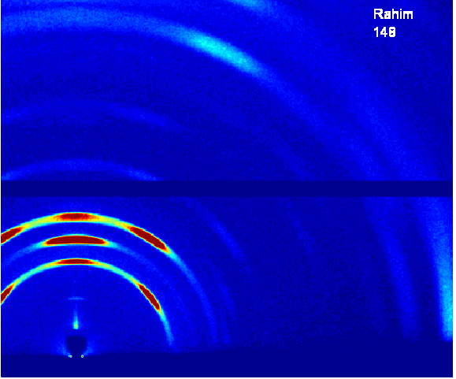

Detectors  D-line GIWAXS image of lead iodide taken with a Pilatus 200k detector. (Image courtesy of Rahim Munir, KAUST) Pixel array x-ray detectors have revolutionized the grazing-incidence x-ray scattering field: low noise levels make GISAXS and GIWAXS feasible for weak scatterers and even for laboratory sources. High dynamic range permits to see strong and weak features in the same image. Fast read-out in the millisecond range and below facilitate measurements of fast ordering processes in real-time movies. Still, if time scales are suitable, great measurements can also be obtained with classic CCD x-ray cameras. SBC can help you to get the most out of your existing detector or make the case for a fast detector. Note that a larger detector is not necessarily a better detector in many cases: A larger number of pixels leads to slower read-out time and more hassle in image processing. Large detectors are also more difficult to move and set up. Often other limitations such as flight paths limit the usable data range. As we have shown at D1 beamline, with a 50 mm by 50 mm detector with 50 microns pixel size we could cover the whole nanoscience length scales of 1-100 nm. The fast read-out of a Pilatus3 200k detector of up to 100 images per second, as shown above, permitted us to explore the millisecond time-scale for real-time studies of crystallization kinetics. SBC will be happy to help you save money and storage space by optimizing your detector choice for your application. Gaurav Giri, Ruipeng Li, Detlef-M Smilgies, Er Qiang Li, Ying Diao, Kristina M. Lenn, Melanie Chiu, Debora W. Lin, Ranulfo Allen, Julia Reinspach, Stefan C. B. Mannsfeld, Sigurdur T. Thoroddsen, Paulette Clancy, Zhenan Bao and Aram Amassian: "One-dimensional self-confinement promotes polymorph selection in large-area organic semiconductor thin films", Nature Communications 5, 3573 (2014). |